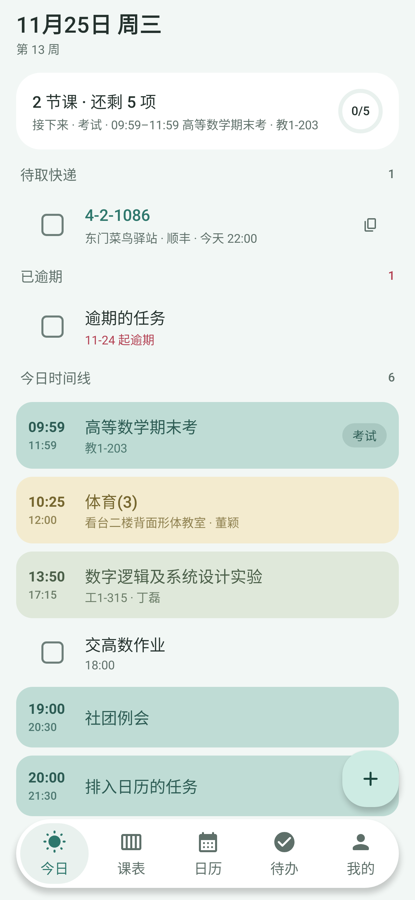

v0.0.1-beta.1 · AGPL-3.0 开源
课表、待办与取件，
写在一张薄荷宣纸上。
直连广工教务，把课表、考试、待办与快递取件码收进一个纯本地 Android 应用。
- 纯本地 SQLite
- 不登录可用
- Android 8.0+
- 无广告无追踪
可交互预览：切底栏、点实验课看 8 处机房、复制取件码、勾选待办或切换主题。


直连广工教务，开学一次就位
凭据经 Android Keystore 本机加密，直连学校教务系统，不经过任何第三方服务器。
每周日晚自动查调停课
后台增量比对下周课表变动，不覆盖你手动添加的待办与备注。
四校区作息与多机房折叠
内置大学城、龙洞、东风路、揭阳四校区作息；多机房自动收拢为「实4-401 等 8 处」。
本机只读查成绩与加权均绩
按学期筛选课程成绩与学分加权 GPA，数据仅在本地只读缓存。
四个底栏视图，各司其职
不藏多层菜单，打开即达核心场景。
下一节课与待取快递，一眼看清
顶部摘要浮岛汇总今日课表、待办进度与下一节课预告；快递取件码独立置顶。
- 取件码
- 森林薄荷色等宽大字，轻点即复制，勾选后整行退灰划掉。
- 时间线
- 按时间顺序排列当日待办与日程，随手打勾完成。

周课表手势排课，多机房一触展开
支持长按拖动换时段、拉边缘改时长、空白格新建日程，午休与晚间分割线清晰留白。
- 多机房
- 实验课长地址自动收拢为「等 8 处」，点开抽屉看完整机房。
- 冲突叠放
- 同一时段多门安排自动叠放，点角标即可切换查看。

月历总览，点哪天看哪天
月历大卡用色条与圆点标记课程和待办，点选任意日期即刻在下方展开当日安排。
- 同源粉彩
- 日程横卡沿用课表植物配色，哪门课一目了然。
- 月周切换
- 右上角一键切换月视图与周视图，随时点「回今天」归位。

打一句话，自动拆出时间与优先级
输入「周五 18:00 交实验报告 !高」，行内实时高亮日期与优先级，考试与快递自动归档。
- 清晰分组
- 按「今天」「之后」「收集箱」折叠收纳，支持按优先级排序。
- 快捷手势
- 右滑完成、左滑改期，右上角一键进入多选批量处理。

回到手机桌面，依然同一套薄荷色

五款桌面小组件
提供今日安排、今日课表、待办清单、待取快递与下一件事 5 款小组件，支持在设置页实时预览并一键添加到桌面。

六套植物预设，深浅双模式
内置薄荷、蜜桃、薰衣草、天空、玫瑰、柠檬 6 套预设，支持自定义取色与壁纸动态取色，小组件与应用色彩同源。
上课自动勿扰
按课表节次自动开启勿扰模式，下课恢复响铃。
快递通知本地解析
本机识别取件短信与通知，自动生成取件码卡片。
系统日历双向同步
与手机原生系统日历互通日程，外部写回不污染撤销链。
提醒可靠性自检
识别小米、OPPO、vivo、华为等机型，只给本机所需的 3 步保活指引。
默认纯本地，
按需连接电脑与 AI
不登录即可使用全部核心功能并导出完整备份；需要大屏排课、AI 辅助或跨设备同步时再按需开启。
- 本地 MCP · 17530 端口内置 QuickJS 沙箱供 AI 读写日程，改动先预览、随时可撤销。
- 局域网 Web 管理同一 Wi-Fi 下用电脑浏览器大屏编辑课表与待办，闲置自动关闭。
- Go 自建同步服务单二进制部署至自有服务器或宿舍软路由，数据完全归自己掌控。
默认仅监听本机 127.0.0.1:17530，配合 adb forward 或在设置中开启局域网监听即可接入。
{
"mcpServers": {
"mintcal": {
"url": "http://127.0.0.1:17530/mcp",
"headers": {
"Authorization": "Bearer <在 App 里复制的令牌>"
}
}
}
}手机与电脑连入同一校园网或热点后，在设置中开启共享服务即可直接访问。
# 1. 手机与电脑连接同一个 Wi-Fi 或热点
# 2. App：设置 → 局域网电脑端管理 → 开启共享服务
# 3. 电脑浏览器打开 App 显示的地址
http://<手机局域网 IP>:<App 显示的端口>/仓库自带 Go + SQLite 同步服务端与内嵌 Web 界面，支持 Docker Compose 一键部署。
# Docker 部署（推荐）
git clone https://github.com/xihale/mintcal.git
cd mintcal/server
docker compose up -d
docker compose logs mintcal | grep 管理员
# 或本地运行（需 Go 1.26+）
go run ./cmd/mintcal-server
# 将云端 MCP 接入 Claude Code
claude mcp add --transport http mintcal https://你的域名/mcp \
--header "Authorization: Bearer <token>"把这一学期的日程，安顿干净
AGPL-3.0 开源 · v0.0.1-beta.1 公测版 · 支持 Android 8.0 及以上设备
不注册、无广告，学号与密码仅通过 Android Keystore 加密留在你的手机里。